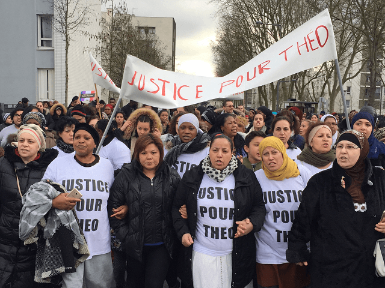

< < < Back
Afro-Islamist Riots Sweep Through Vibrant Suburbs Of Paris – Return Of Kings
On the afternoon of the 2nd of February 2017, in the town of Aulnay-sous-Bois (suburbs of Paris), 22 year-old Théo Luhaka, following a violent verbal exchange with four police constables, was restrained on the ground and later brought to the police station
Following his arrest, Théo is brought to the hospital where the medical examination reveals that he suffers from a 10cm (4 inches) tear of the anal canal. The 4 policemen are currently suspended.
The IGPN (the “police of the police” inspection service) examined the elements of the case and ruled that it appears to be an accident. The local court has so far charged three of the police constables with gang assault and one of them charged with rape. The affair is in progress. Those are the facts we know.
The two sides of the story

The scene took place in a Paris ghetto, just like this one
Théo asserts that the policemen battered him while on the ground, pulled down his trousers then taunted him with a telescopic baton before penetrating him with it.
He then asserts that the policemen dragged him to their car, macing him with pepper spray while calling him “bamboula” (the closest English translation would be “silly coon”). Théo’s family hired Eric Dupont-Moretti, left-wing lawyer famous for defending Mohammed Merah’s brother (Islamic terrorist Merah gunned down three soldiers and four Jews, among them 3 children, in 2012).
On the other side, the policemen and their lawyers assert that Luhaka refused to cooperate and comply before kicking, punching the constables and that if the penetration with the baton happened, it was accidental.
This video DOES NOT include the alleged assault:
The riots and the media recuperation
Regardless of the verdict, justice must examine the affair and the policemen are innocent until proven guilty. What matters is the response that we observed in many Afro-Muslim ghettos after the media broadcasted the story:

Rioting nationwide. Local precincts attacked. Police officers, public servants, firemen and reporters injured with Molotov cocktails and stones. Around a hundred arrests. Destruction of private and public property, worth millions of euros. Dozens of cars burnt. Cash machines and shops looted. Systematic assault and robberies on ethnic French and foreign tourists.
In one instance, police officers had to shoot live rounds in the air to deter about fifty rioters that threatened to lynch them. All of this to the joyous sound of “Fucking Gauls, you and your filthy race” and “You sons of whores, we will avenge him.”
This Periscope account depicts the crowd movements near Bobigny’s courthouse.
The irony lies in the fact that in their effort to get clicks and create sensational news, the biased media (who took the side of the accuser from the start, adding then deleting elements from the “official” version, publishing the names and locations of the accused, before any judicial conclusion) depicted the French police as inherently violent and racist. Leftist partisans at the New York Times lead the way for the English-speaking press.
But they were among the most severely attacked when the youths surrounded them. In a flow of insults, the buses of radio stations RTL and Europe 1 were torched, rocks hurled at them and reporters of BFMTV injured. Who prevented them from being lynched? The cops on the scene.

Weakling and soon-to-be-retired President Hollande a.k.a “Pudding”, visited Luhaka in the hospital and the town of Aulnay on the 14th of February, showing where his priorities are. He was booed and copiously insulted. Other irrelevant celebrities obviously jumped on the bandwagon.
But when in Grande Borne, two policemen are almost burnt alive or when a physician is stabbed 30 times by an Arab man, no one gives a fuck. Nothing from the media or the government
The usual suspects

Let’s not beat around the bush. Those events reproduce step by step the chaos caused by the terrorist movement Black Lives Matter in the U.S.A. The Afro-Muslim/BLM/leftist national rioting follows every step of its American predecessor sparked by the deaths of Trayvon Martin or Michael Brown among others.
Last summer, Adama Traoré, a black man with a heavy criminal past, is restrained by the police and transported to the local precinct. He dies later of asphyxiation which the court rules was not the result of external factors such as violence. Cops were cleared of charges. Afro-Muslims refuse to accept the verdict. “Peaceful” protests are organised. Riots and looting follow.
In Traoré’s case, a clique of “anti-racist” (Newspeak for “Anti-white”) like SOS Racisme, the LDH (League for Human Rights), the CRAN (Representative Council of Black Associations), Antifas and more importantly Black Lives Matter France, helped in their campaign of hate against the police and disruption of public order. As in the American case, they are all bankrolled by George Soros’ Open Society. (1, 2, 3, 4)
Like in America, they portrayed the victim(s) as martyr(s). They did not even bother changing the slogans for both movements. Both violent protests for Traoré and Luhaka popularised hashtag campaigns and chants such as “No Justice, No peace” or “Everyone hates the police.”
A similar case, where the death of Afro-Muslim suspects due to their own recklessness gives the perfect pretext to unleash chaos and Anti-French hate, brings us back to the Zyed and Bouna case in 2005 with riots that plagued France for three weeks and showed to the whole world the impotence of the government when faced with immigrant violence and the insufficient means given to the police to counter it, including outdated material, limited number of constables and orders to stand down when directly attacked.
Of course, SOS racisme and their Leftist-Anarchist chicken-legged allies were there again.
“Justice for what’s-their-face! Haha! Take that you fucking White males!”
The same scenario has been repeating itself for the last 20 years or so. Packs of predominantly Muslim and Black unemployed youth take advantage of some kid’s death that they would have stabbed for a crumb of hash a week before, infiltrate a “relatively peaceful” protest, rob stores, stomp incredulous leftists that see their virtue signalling backfire and try to murder police officers.
Ceux qui la détestent viennent de faire gagner Marine Le Pen
2005 riots. A majority of rioters dream of recreating them.
Adding to the migrant invasion, immigrant delinquency and terrorism risk, these riots help to tank the hopes of France to remain a major tourist destination in the future.
The number of Chinese tourists dropped of 30% this year alone, around 50% for the Japanese. The Koreans follow the same path after the attack of their bus this week, their embassy advising them to avoid France and Paris in particular. Russia issued the same warning to its citizens in 2005 and maintain it to this day. Entire districts die because no investor wants to open a shop there. Those “lost territories of the Republic” keep providing us with homegrown jihadis and domestic murders.
Elites divide and conquer, taking their useful idiots for a free stuff ride while they nip thought crime in the bud. It was the same failed strategy used by the Clinton-Soros-Black Lives Matter Triple Entente last year in the United States, leading to Trump’s election.
Government backed media recuperate these events to fan the flames of division and incite the largely politically inactive Afro-Muslim youth of the ghettos to go to the polls, and vote for the right candidate, which is at the moment, anyone who is not Marine Le Pen, head of the Front National and so far the favourite in the French presidential race of 2017.
Their plan looks like it backfired and gave her what she needed to reach the Elysée palace.
Read More: French Writer Reveals That Army Is Planning To Recapture Muslim No Go Zones